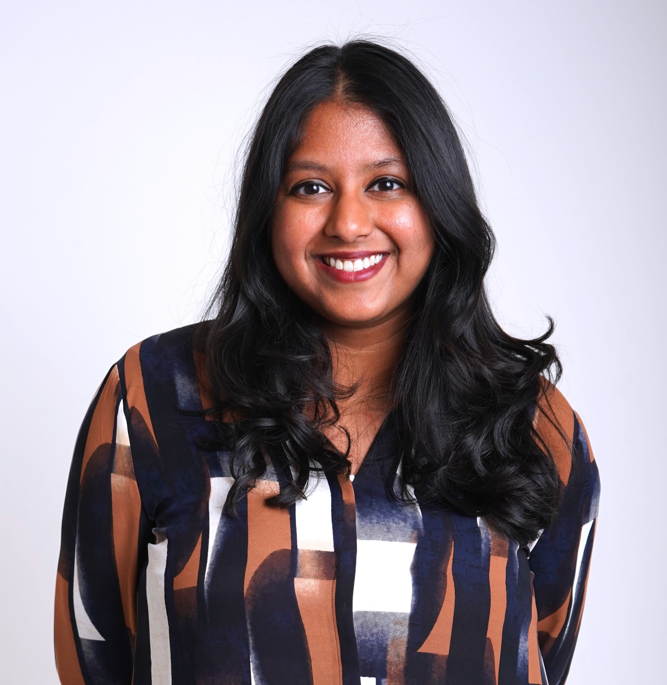

I'm a product and growth leader with over a decade of experience at Meta, Instagram, Dropbox, and more.
Now, I'm advising startups on accelerating growth and exploring new product opportunities in AI. Previously, I led teams to:
- Turnaround and scale Feed Recommendations and Growth at Instagram
- Launch and prove product market fit of Facebook Commerce as an early PM
- Build and drive Dropbox's self-serve growth engine from Series B to IPO (millions to $1B+ ARR)
I'm a Penn grad (M&T, CS + Finance), a Bay Area native, and a recent transplant to NYC. Besides tinkering on new products, you'll find me working out, exploring, and writing.